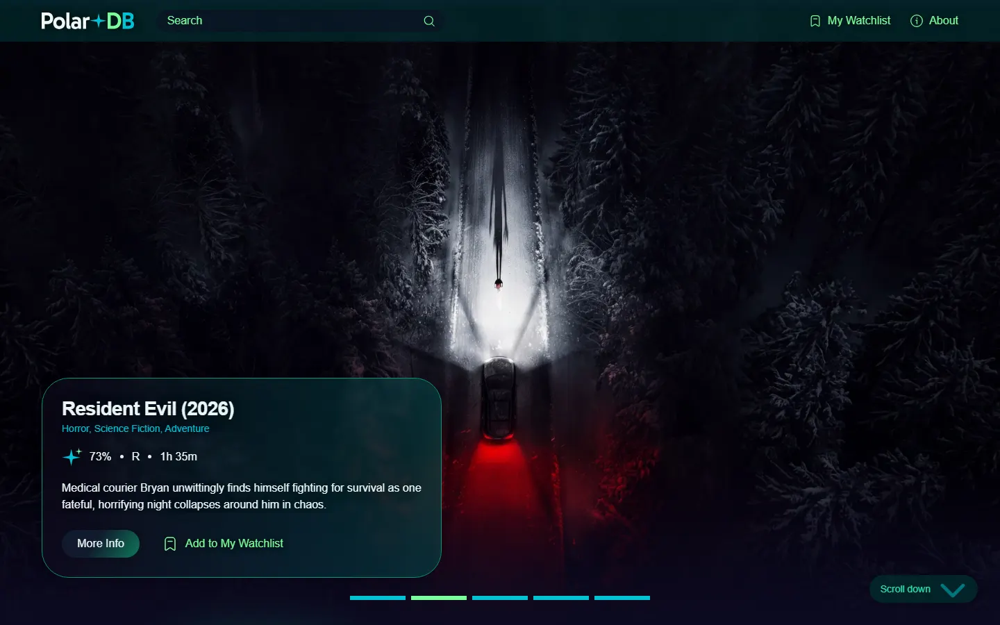
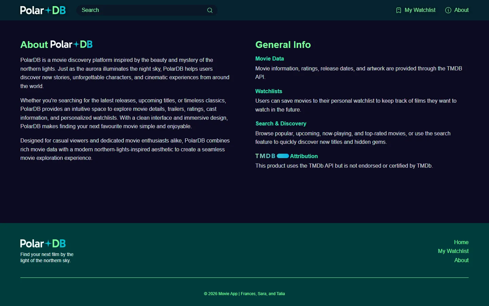
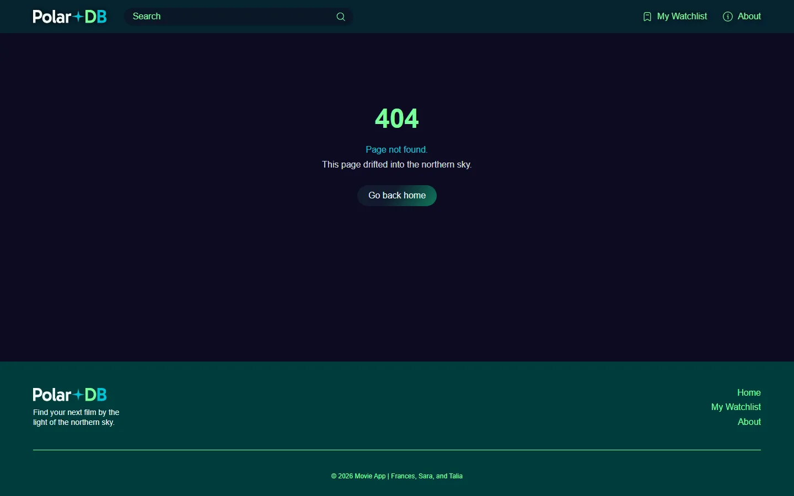
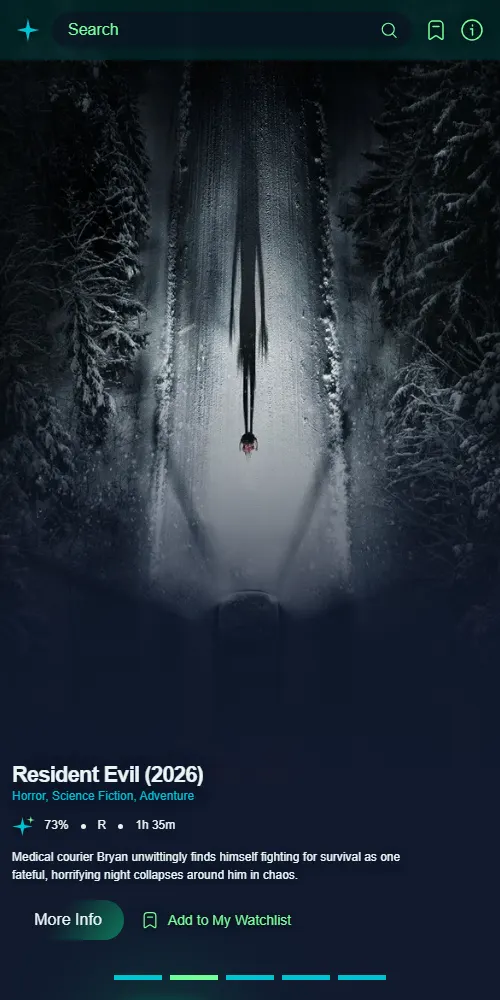

Team Project · React Web App
Polar DB
A fully responsive movie discovery app, inspired by the northern lights and powered by The Movie Database (TMDB) API.
- Course
- Web Scripting 3 (FWDP 3400)
- Team
- Talia, Sara & Frances
- My role
- API layer, About page, 404 page, project setup
- Built with
- React, Vite, React Router, Sass, TMDB API

Overview
Polar DB helps people find their next film. Users can browse popular, upcoming, now-playing and top-rated movies, search by title or genre, open a full movie page with cast, trailer, rating and certification, and save favourites to a personal watchlist that's kept in their browser.
We built it as a team of three for Web Scripting 3, following a brief that called for mobile-first responsive design from 320px to 1980px, accessible colour contrast, and a clean Git workflow with branches and pull requests.
What I built
- Project setup: the original repo scaffold and npm setup the team built on.
- The TMDB API layer: a shared fetch client and service functions every page uses to get movie data.
- The About page: the app's story plus the required TMDB attribution.
- Movie detail wiring: connected the individual movie page to its API endpoint.
- The 404 page: a "Page not found" screen and the fallback route that catches any unknown URL.


Inside the app
-
Home
A hero carousel of top movies and tabs for Popular, Upcoming, Now Playing and Top Rated, loading 12 at a time.
-
Movie page
Poster, backdrop, runtime, certification, rating, genres, director, cast and trailer.
-
Search
Search by title or genre with live suggestions, plus sort and year filters.
-
My Watchlist
Saved favourites kept in the browser, with a friendly empty state.
-
About
What Polar DB is, plus the TMDB attribution the API requires.
-
404
A themed fallback for any page that doesn't exist.
How we worked
We split the app by feature and worked in branches, merging through pull requests on GitHub. The API key was kept out of the repo entirely.
- Sara built the watchlist page, favouriting and the cast UI.
- Frances led the design system, header, footer and routing, the home page, search and accessibility polish.
- I set up the project, built the API layer, the About and 404 pages, and wired up the movie detail endpoint.

What I learned
Much of my work on Polar DB was the groundwork that my teammates built upon. Scaffolding the project and setting up npm early meant everyone started from the same structure and dependencies. In a team, a messy starting point turns into merge conflicts and "works on my machine" problems for everyone, so getting it right the first time mattered.
Building the shared TMDB fetch client taught me why you keep API
logic in one place. I didn't want each component writing its
own fetch call. I wrote one client that handles the
base URL, the API key and responses, and put service functions
on top of it. Components then asked for data by intent, like
"get movie details," without dealing with request details. Our
instructor pointed out that keeping API URLs, image paths,
local-storage keys and shared settings in a separate file, with
fetch helpers kept out of the components, made the project
easier to maintain. I now see that as a design decision, not
just tidiness. When the Movie Detail page needed its data,
wiring it up was simple because the service layer already
existed.
The 404 page and wildcard route were small tasks, but they made me think about the parts of an app that users only see when something goes wrong. A bad URL should land on a page that fits the app's design and helps the user get back, not on a blank screen.
As a team, we kept the API key and .env out of the
repo, kept node_modules ignored, used multiple
branches with pull requests, and kept main matching
our submission. Those habits are what let three people work in
one codebase without stepping on each other.
What I'd do differently: The feedback gave me three concrete habits for future projects:
-
Write media queries in
emrather thanrem, becauseemresponds better to user font-size settings. - Set a solid fallback background color behind gradients and images, for accessibility and for older devices.
- Watch image sizes even when an external API hosts the images, because oversized images still hurt render performance.